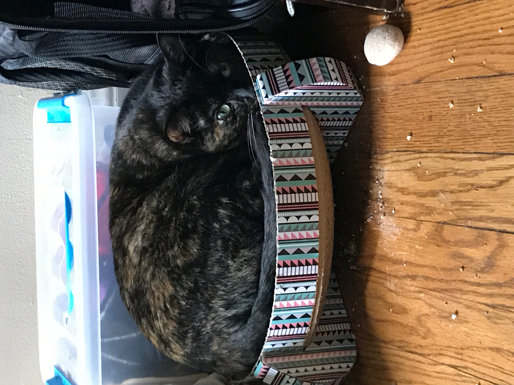

Hello!
I'm Tobias (he/him/his) and when I'm not at work sorting through federal data or doing work for my MLIS I am fostering kittens! This website project was borne out of my desire to build something fun that I could spend some time enjoying myself on; and to consolidate my knowledge of resources in the DMV.
Since 2019, over 15 kittens have been fostered through my apartment, all of whom have found their forever home. I've really enjoyed building this project and hope it was interesting.
